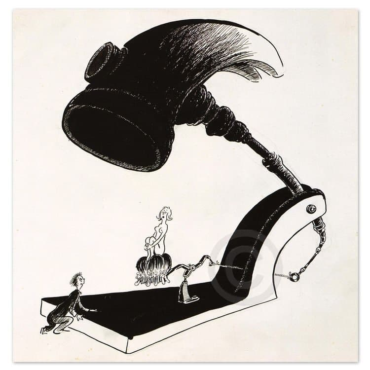

Mães solteiras
data 19/11/2021
Porquê você deve evitar ao máximo as mães solteiras ? Bem vamos começar falando o seguinte, nem todas as mulheres são iguais, você deve saber diferenciar uma mulher da outra, assim como você não é picareta outro cara deve ser, e ele não vai sair falando para todo mundo, as pessoas acabam descobrindo, esse texto aqui vai se referir a grande maioria das mulheres, isso é para você se preparar para a vida caro rapaz. Para iniciar este texto de o porquê evitar as mães solteiras (M$OL) vamos começar falando de você, eu vou montar um perfil que talvez você se enquadra, imagina que você é um cara solteiro, com um bom trabalho um carro bacana, tem a suas coisas sempre bem arrumadas e alinhadas ao seu gosto, você mora sozinho, e faz o que quiser com a sua grana, você tem 2 salários todo mês, você vai a academia faz passeios e até investimentos, porém você acredita que está faltando uma mulher honrada na sua vida, e aí você conhece uma mãe solteira.
Está mãe solteira tem um filho, e tem um trabalho onde ela ganha um pouco mais de um salário, aí você decide sair com ela, porém como é folga dela no final de semana ela não tem com quem deixar a criança e aí começa alguns dos problemas que você vai passar. Para sair com ela você terá que pagar todo o lanche dela e do Enzo, ou seja já é um gasto a mais, afinal você queria conhecer a moça e não a família no primeiro encontro, e ela avisou para você que a criança iria, mas mesmo assim você não desmarcou, este encontro foi no cinema e devido a criança ter menos de 7 anos ele é muito agitado, não parava quieto dentro da sala de cinema, na cara das outras pessoas já da pra ver o incômodo, então vocês decidem sair da sala sem terminar o filme, que pena pois o filme era bom. Ao sair do cinema vocês decidem ir a um restaurante para conversar, porém a criança não parava quieta e a mãe tinha que está o tempo todo atenta no menino, então a conversa não fluía, até que você decide tentar se aproximar da mulher, mais por ciúmes o filho decide sentar bem no meio de vocês, ou seja no primeiro encontro não rolou nada e você ainda pagou todo o rolê dobro de tudo que vocês consumiu afinal o Enzo pedia tudo que ele via pela frente. Bem o que eu quero dizer até aqui é que neste encontro, provavelmente todas as expectativas do rapaz foram quebradas, e não leve a criança a mal ele não tem culpa se a mãe dele está procurando um novo parceiro, só que tem um detalhe as mães solteiras não procura um novo parceiro, as mãe solteiras não procuram um namorado e nem um marido, elas querem achar um bom pai para o filho delas, isso mesmo o cara que fez o filho ficou com a diversão, e quem namorar esta mãe solteira daqui pra frente só terá responsabilidades.

Mas continuando a história, o jovem rapaz decidiu tentar um segundo encontro, agora em um clube aquático, neste dia ele já percebeu que o filho desta mulher iria sempre frustrar os planos de passeio, e neste passeio a mãe solteira quereria ver como ele o pretendente a padrasto iria se comporta com o filho dela, isso mesmo ela não está afim da diversão e sim ver como seria o bem estar da criança ao lado do padrasto, no fim do passeio a criança acabou dormindo, e o rapaz ao deixar a moça em casa conseguiu um beijo da dama. Então todo feliz ele foi para casa, e passou o resto da noite conversando com ela pelo WhatsApp, mas três dias depois o rapaz resolveu que devia morar com ela, mas não a convidou para morar com ele, pois ele achava que era muito cedo, porém ela mesma se convidou, e falou para o rapaz que iria morar com ele pois ela não aguentava mais a mãe dela enchendo o saco dela todos os dia.
Observação! Ela queria um padrasto para o filho dela, e se livrar da mãe que vivia jogando umas verdades na cara dela. Uma semana depois lá estavam os três morando juntos, a mãe estava feliz, pois achou um padrasto para o filho e saiu da casa da mãe, o filho também estava feliz, pois havia ganhado brinquedos novos e um vídeo game de quebra tinha um PC na casa do seu padrasto, já o mais novo padrasto estava meio incomodado, pois a criança vivia mexendo nas coisas dele, ele que era um cara organizado, agora tem que ver muitas coisas fora do lugar e espalhadas pela casa. Para piorar a situação um belo dia o pai da criança foi na casa dele, o mesmo queria ver o garoto, para piorar ele pediu para a mãe do garoto ir com ele a papelaria escolher um material para o menino, aí o rapaz da história pensou assim, "poxa ele podia só mandar o dinheiro ao invés de sair com a minha mulher ", depois de algumas horas ela voltou, e falou que o pai do garoto havia levado ele para passear. Bem eles aproveitando que ficaram sozinhos, foram fazer amor, afinal a criança não dormia e sempre atrapalhava este momento de intimidade do casal, quatro horas depois o pai do garoto trás a criança de volta, o menino está agitado e pediu para a mamãe beijar o papai, ela tentou explicar o porquê isso não iria rola e a criança entrou para dentro de casa triste, e com raiva do padrasto, os problemas só estavam começando. O pai do garoto ainda era louco de amor pela mãe da criança, e vivia mandando mensagens e fazendo ligações, ele sabia que hora o rapaz trabalhava e fazia visitas ao menino quando ele não estava em casa, o filho queria ver a mamãe dele junto com o pai e vivia pedindo isso, nós aniversários do garoto o pai sempre estava lá, pronto para afrontar o jovem rapaz. Então em um belo dia, o rapaz da nossa história já estava de saco cheio, ele não aguentava mais ver o menino pulando no sofá e pagando as coisas que não era dele, então ele resolveu brigar com o garoto, foi um momento de fúria mais aconteceu, a criança resolveu que queria ir para casa do pai, até tentou fugir e fez escândalo o resto da noite, a mãe do garoto ficou com raiva, e falou para o rapaz que ele não podia brigar com o filho dela, pois o menino era sensível e não sabia o que estava fazendo. Os dias foi passando e a situação para o jovem rapaz só piorando, ele já até havia brigado com o pai do garoto, mais isso fez o garoto ter mais raiva dele, o rapaz não sabia mais o que fazer e decidiu que queria terminar aquele relacionamento, a mãe do garoto disse que então ele que saísse da casa. Eles brigaram muito e ela resolveu fazer uma denúncia na delegacia da mulher, na delegacia ela alegou para a delegada que estava sofrendo maus tratos psicológicos, e o seu filho também, não deu outra foi expedido um mandado de afastamento, era uma medida protetiva, e diante deste mandado o rapaz teve que sair da casa dele, pois estava proibido de aproximar-se da mulher e do filho dela. Ele foi morar com os pais dele até resolver esta situação, ele queria a casa que ele habitava de volta, mais aí aconteceu algo pior, a mãe do garoto pediu pensão alimentícia para o menino, que nem filho dele é e o pior ele teve que pagar, pois a lei garante que o padrasto tem que pagar pensão, isso se chama pensão sócio afetiva, ele não pagou, e pegou seis meses de cadeia.
Até aí a vida do rapaz já estava destruída, ele estava com a ficha suja e teve que iniciar tudo do zero. Resumindo as mãe solteiras são um risco muito grande para os homens hoje em dia, você pode até namorar uma, mas jamais a coloque dentro da sua casa, e sempre certo que você terá problemas com as mãe solteiras, seja problemas grandes ou pequenos são problemas. Para se aprofundar no assunto veja a indicação de livro que temos no link abaixo. Indicação do Gustaf Feminismo: Perversão e Subversão